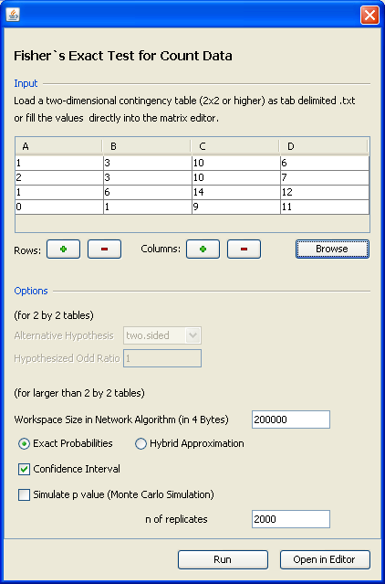
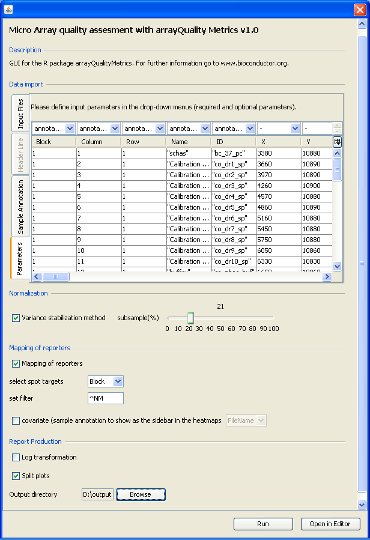
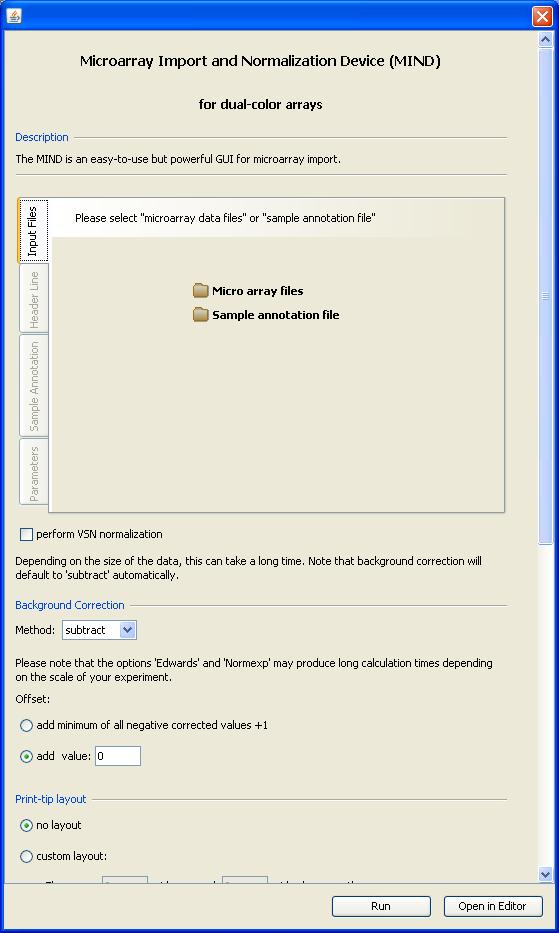
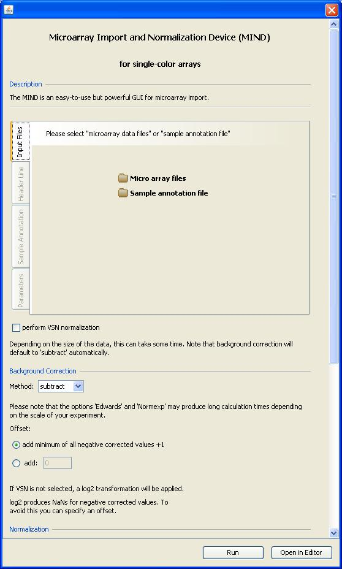
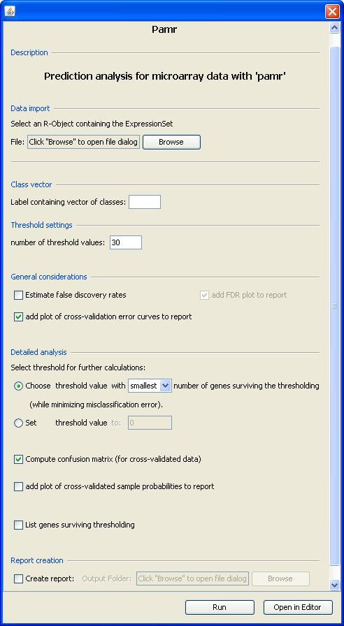
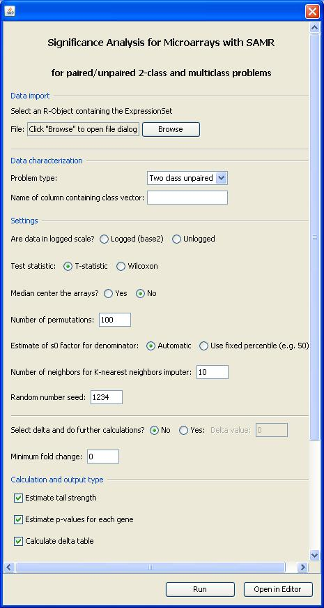

Screenshots
Here you find some screenshots of RGG GUIs with corresponding .rgg files. This page will be updated occasionally.
Agilent Single Channel Expression Microarray QC Report
An R-GUI for the quality control report of Agilent single channel expression microarrays. Please click here to download the RGG definition file and the sample data.

Fisher`s Exact Test for Count Data
Performs Fisher's exact test for testing the null of independence of rows and columns in a contingency table with fixed marginals. Click here to download RGG definition file and the sample data.

The arrayQualityMetrics package
GUI for the R package "arrayQualityMetrics". For further information go to here. Click here to download .rgg file and the two sample Affymetrix arrays.

Microarray Import and Normalization Device (MIND)
The MIND is an easy-to-use but powerful GUI for microarray import. MIND consists of three RGGs for Single- and dual color microarrays. Click here to download .rgg files and sample data.


Prediction Analysis for Microarray Data with 'PAMR'
ATTENTION: This GUI does not support survival time data. To do prediction analysis for survival time data look for Pamr - Survival Time. Click here to download the .rgg file. To create a sample data, please use one of the "MIND"s.

Significance Analysis for Microarrays with 'SAMR'
Perform significane analysis with the samr package. Click here to download the .rgg file. To create a sample data, please use one of the "MIND"s.
